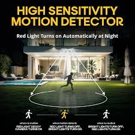
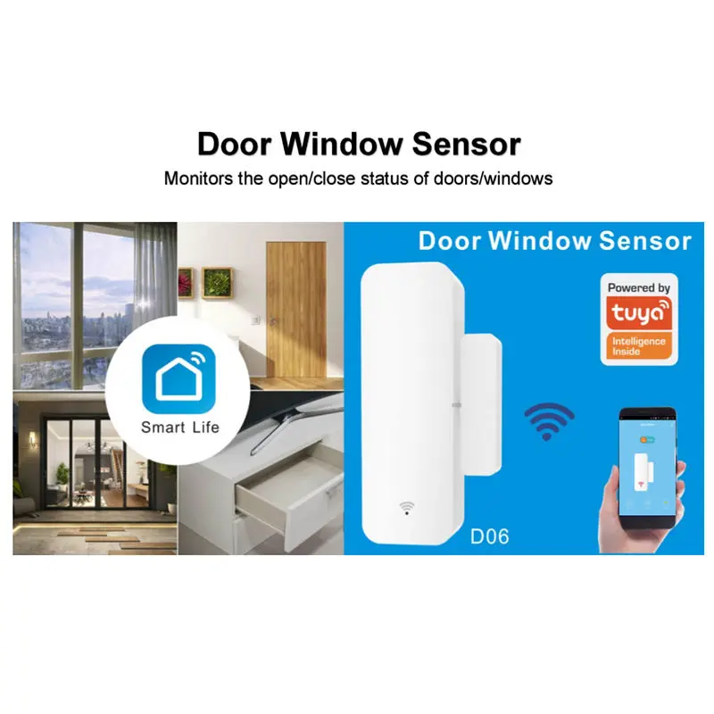
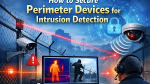
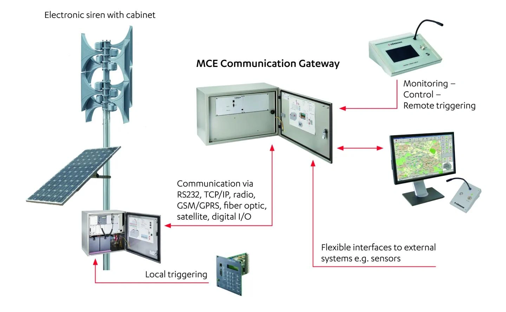
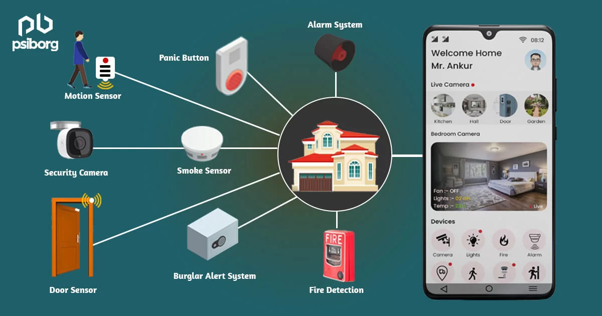
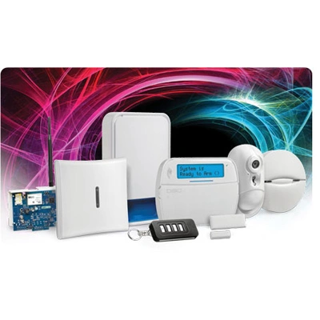
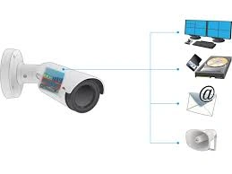
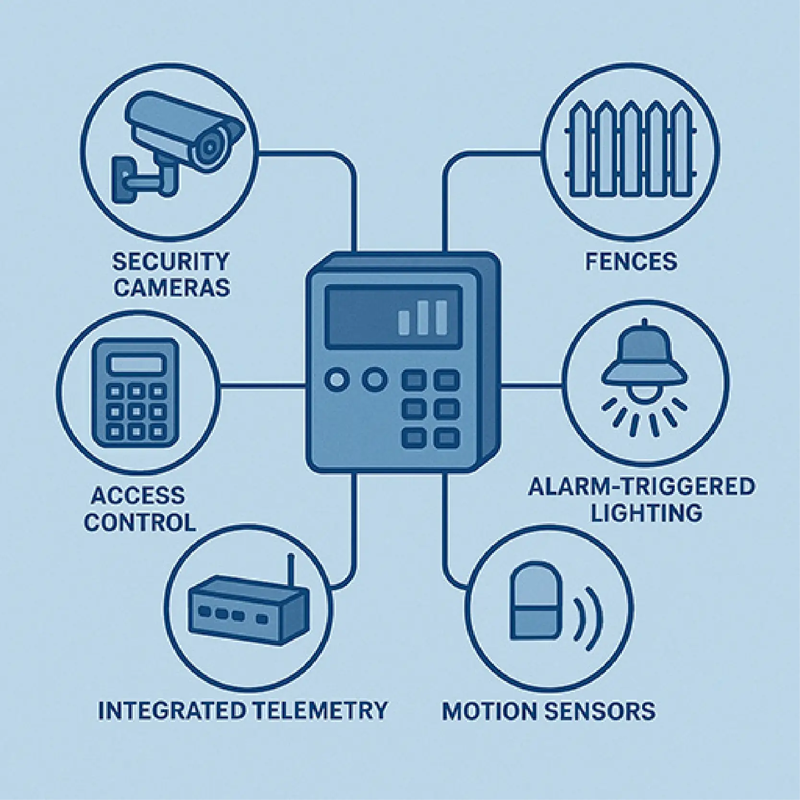
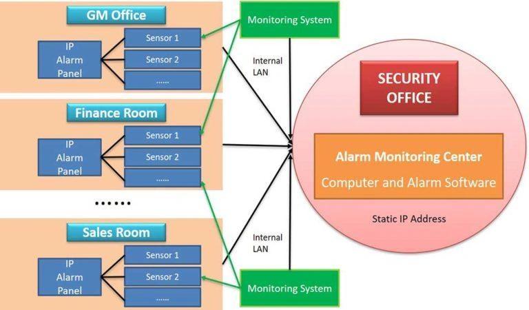
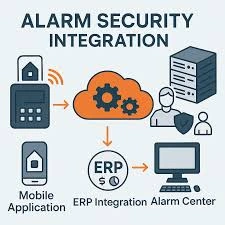

Protect your property with professional intruder alarm systems in Nairobi and across Kenya, designed to detect, deter, and respond to security threats instantly.
Our alarm systems integrate with CCTV surveillance, access control systems, and structured cabling.
🚀 Request Security ConsultationWe provide high-performance intruder alarm installation in Kenya tailored for homes, offices, banks, warehouses, and institutions.
Our systems integrate seamlessly with:
We provide professional alarm system installation in:
We install state-of-the-art intruder alarm control panels designed for residential, commercial, and industrial security systems.
Our alarm panels support real-time monitoring, remote access, and seamless integration with CCTV and access control systems.
Whether you need a wired or wireless alarm system, our solutions are scalable and tailored for maximum protection.
Designed with smart automation features, these panels allow instant alerts, mobile notifications, and centralized management.
We use industry-leading brands to ensure reliability, durability, and long-term performance.
Our installation process follows global security standards to guarantee efficiency and compliance.
With cloud-based monitoring and backup systems, you stay protected even during power failures.
Upgrade your security infrastructure with intelligent alarm control systems optimized for modern threats.

Our motion sensor alarm systems provide accurate intrusion detection using advanced infrared and microwave technology.
These sensors detect unusual movement instantly and trigger alarms to prevent unauthorized access.
Designed for both indoor and outdoor security, they are perfect for homes, offices, warehouses, and commercial properties.
Our systems minimize false alarms by using intelligent detection algorithms.
We offer pet-friendly motion sensors, wide-angle coverage, and long-range detection for enhanced performance.
Integrated with smart security systems, users receive instant alerts via mobile apps or monitoring centers.
Our solutions are ideal for 24/7 surveillance and security automation.
Improve your property’s protection with reliable motion detection technology.

Secure all entry points with our door and window sensor installation services designed to detect unauthorized openings.
These sensors provide instant alerts when doors or windows are tampered with, ensuring maximum protection.
Ideal for apartments, offices, and retail shops, they act as the first line of defense.
Reliable and easy to install for both new and existing buildings.
Our sensors integrate seamlessly with alarm panels and smart home systems.
We provide both wired and wireless solutions to suit different environments.
With high durability and low maintenance, our systems deliver consistent performance.
Enhance perimeter security with reliable entry detection systems.

Protect your property boundaries with advanced perimeter security systems including beam sensors and outdoor motion detectors.
Our solutions are designed to detect threats before intrusion occurs.
Ideal for homes, businesses, and industrial facilities requiring high-level protection.
Engineered for durability and performance in harsh environments.
We deploy weather-resistant and high-precision detection technologies.
These systems integrate with CCTV and alarm monitoring for complete coverage.
Ideal for large compounds and gated communities.
Safeguard your assets with proactive security measures.

Our alarm siren systems provide powerful audible and visual alerts to deter intruders instantly.
Designed for both indoor and outdoor use, they activate immediately during a security breach.
We install high-decibel sirens with flashing strobe lights for maximum effectiveness.
Suitable for residential, commercial, and industrial applications.
Integrated with smart alarm systems, our sirens trigger mobile notifications.
We ensure proper placement and configuration for optimal coverage.
These systems enhance overall response time during emergencies.
Strengthen your security system with reliable alert solutions.

Upgrade to smart intruder alarm systems with full remote monitoring and mobile control.
Our solutions integrate alarm systems with CCTV, access control, and IoT devices.
Monitor your property in real-time from anywhere using mobile apps.
Perfect for modern homes and businesses seeking intelligent security.
We offer 24/7 monitoring integration, instant alerts, and automation features.
Our systems provide advanced analytics and reporting.
With secure connectivity and user-friendly interfaces, managing security is easy.
Stay connected and protected with intelligent alarm solutions.

We deploy enterprise-grade alarm control panels designed for large-scale security systems in commercial buildings and industrial facilities.
Our systems support multi-zone monitoring, centralized control, and seamless integration with CCTV and access control platforms.
Ideal for offices, malls, warehouses, and data centers requiring high-level protection and scalability.
Built with advanced automation, remote access, and real-time alert capabilities for maximum efficiency.
Our solutions support cloud-based monitoring, redundancy systems, and fail-safe configurations.
We implement industry-leading technologies that ensure compliance with global security standards.
These systems enable security teams to manage multiple sites from a single dashboard.
Upgrade your infrastructure with reliable enterprise alarm systems built for modern threats.

Our enterprise motion detection systems use advanced infrared, microwave, and AI-based analytics for accurate intrusion detection.
Designed for large environments, these sensors provide wide coverage with minimal false alarms.
Perfect for offices, factories, logistics centers, and high-security zones requiring continuous monitoring.
Integrated with centralized alarm systems for real-time alerts and automated responses.
We deploy long-range sensors, pet-immune technology, and adaptive detection algorithms.
These systems integrate seamlessly with surveillance and building management systems.
Our solutions enhance operational security while reducing unnecessary disruptions.
Ensure reliable and intelligent threat detection across your enterprise environment.

Secure all entry points with enterprise-grade door and window intrusion sensors built for high-traffic environments.
These systems detect unauthorized access attempts instantly and trigger alarms across integrated platforms.
Ideal for corporate offices, retail chains, banks, and commercial complexes.
Engineered for durability, precision, and seamless integration into enterprise security systems.
Our solutions support both wired and wireless deployments for flexible installations.
Integrated alerts, logging, and analytics improve overall security visibility.
These sensors act as the first line of defense against intrusion threats.
Enhance access point protection with reliable enterprise detection systems.
We deploy advanced perimeter intrusion detection systems including beam barriers, fence sensors, and outdoor motion detectors.
These systems provide early threat detection before intruders gain access to your premises.
Ideal for industrial sites, airports, warehouses, and large commercial properties.
Designed for high accuracy and performance in outdoor and harsh environments.
Our solutions are weather-resistant and built for continuous operation.
Integrated with CCTV and alarm systems for complete security coverage.
They significantly reduce risk by detecting threats at the boundary level.
Protect your enterprise assets with proactive perimeter defense solutions.

Our enterprise alarm notification systems include high-powered sirens, strobe lights, and automated alert mechanisms.
Designed to respond instantly during security breaches, ensuring rapid awareness across facilities.
Ideal for large buildings, campuses, factories, and critical infrastructure.
Supports integration with centralized monitoring and emergency response systems.
We deploy multi-zone alert systems for targeted notifications.
These systems also support mobile alerts and remote notifications.
Proper configuration ensures maximum coverage and effectiveness.
Strengthen your emergency response with reliable enterprise alert solutions.

We provide smart enterprise alarm integration solutions that unify alarm systems with CCTV, access control, and IoT platforms.
Our systems enable centralized monitoring, automation, and remote access for complete security control.
Ideal for modern enterprises seeking intelligent and scalable security infrastructure.
Monitor and manage multiple locations through secure cloud-based platforms.
Features include real-time alerts, analytics, reporting, and automation workflows.
Our solutions enhance operational efficiency and situational awareness.
Built with secure connectivity and user-friendly dashboards.
Transform your security operations with advanced enterprise alarm integration systems.
Don’t wait for a security breach — install a reliable intruder alarm system now.
Get Protected NowWe install industry-leading security brands including Hikvision, Dahua, DSC, Paradox, and Texecom alarm systems.